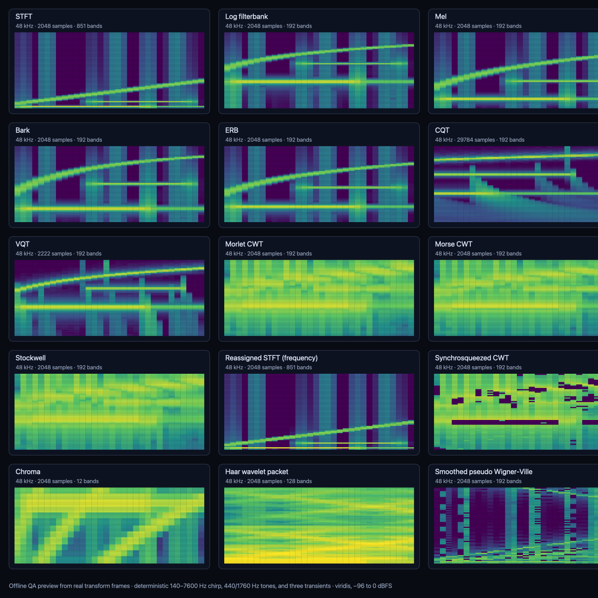

15 analysis modes
STFT, CQT, VQT, wavelets, Stockwell, reassigned and synchrosqueezed transforms, chroma, and more.
Free and open-source VST3 effect
SineSoda is a resizable, real-time time-frequency analyzer with 15 transforms, calibrated color, and bit-exact audio pass-through.
macOS universal (Apple Silicon + Intel) · Windows x64 · VST3 · Apache-2.0

STFT, CQT, VQT, wavelets, Stockwell, reassigned and synchrosqueezed transforms, chroma, and more.
Lock-free audio handoff, bounded display queues, overload recovery, and automatic analysis rate limiting.
Install it as a mixer effect, rescan VST3 plug-ins, and analyze without changing the signal.
Install in three steps
SineSoda.vst3 into your user VST3 folder.